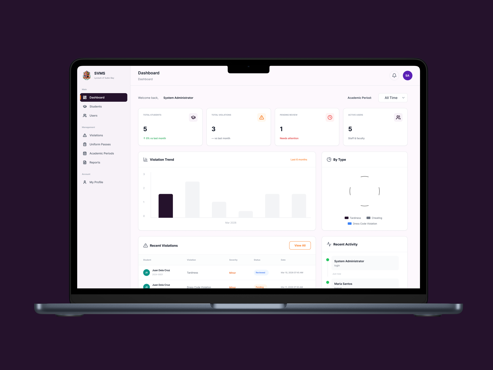
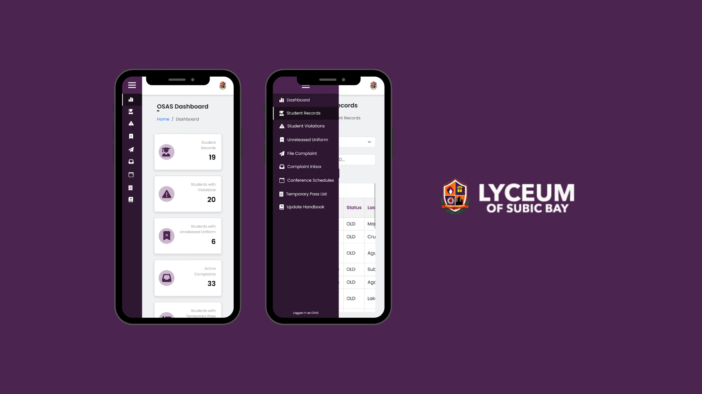
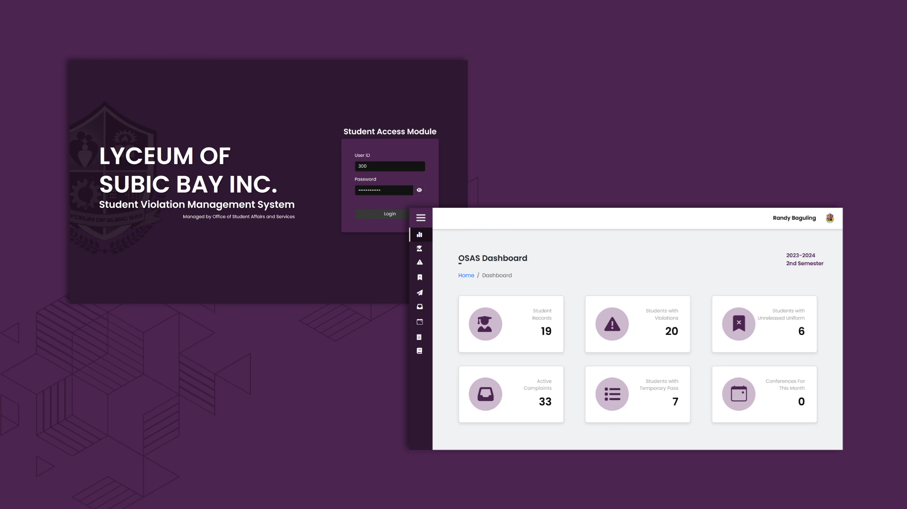

SVMS – Student Violation Management System for Lyceum of Subic Bay
SVMS is a web-based student violation management system developed for the Lyceum of Subic Bay's Office of Student Affairs. It streamlines the reporting, tracking, and resolution of student violations to support more efficient case management and better transparency.
problem
The Office of Student Affairs was handling violation reports manually through paper forms and spreadsheets. This made it difficult to track cases, ensure follow-through, and maintain transparent records — creating delays and inconsistencies in student discipline management.
solution
SVMS provides a structured digital platform where violations can be reported, tracked, and resolved efficiently. Administrators get a clear case management dashboard while students have visibility into their records — improving transparency, accountability, and turnaround time across the entire process.
Role
Front-End Developer & UI/UX Designer
Client
Lyceum of Subic Bay, Office of Student Affairs
Deliverables
Web System, UI/UX Design
Tools
HTML, CSS, JavaScript, Figma